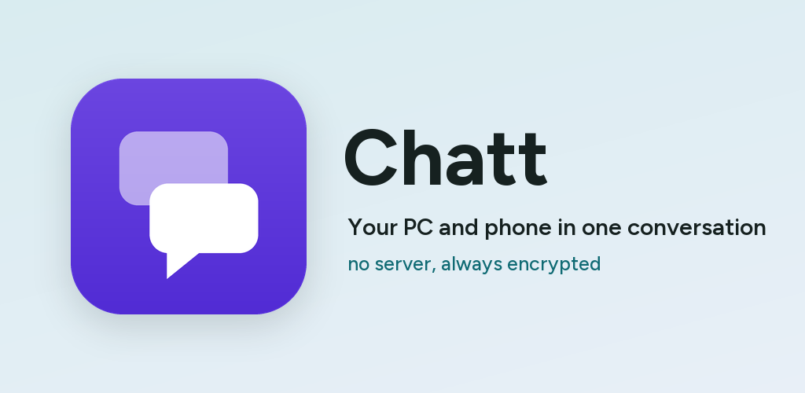
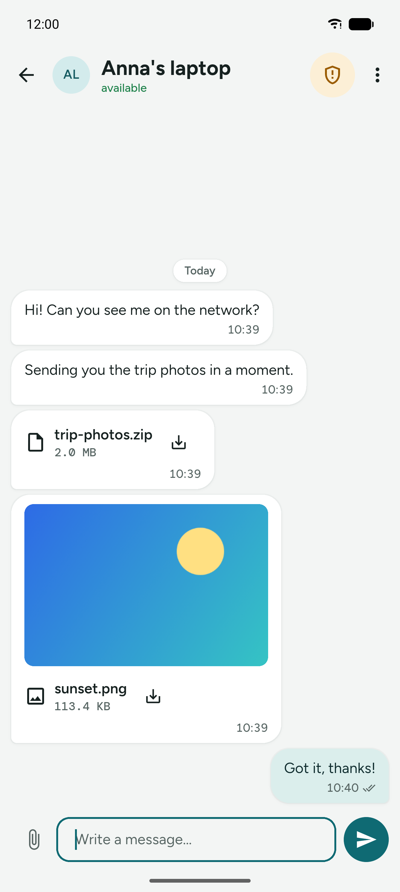
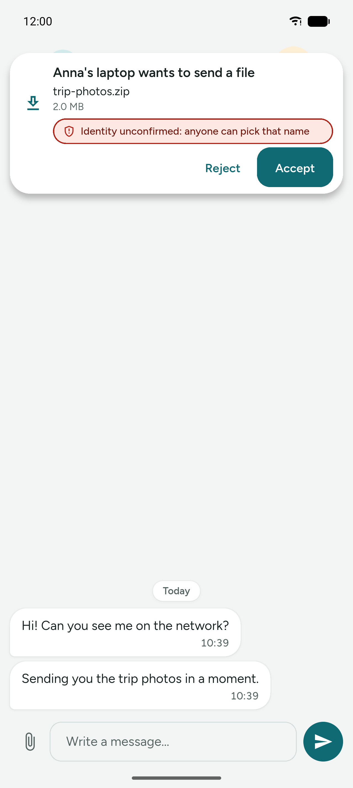
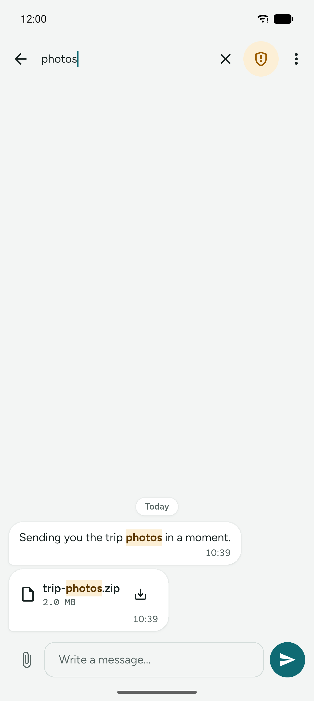
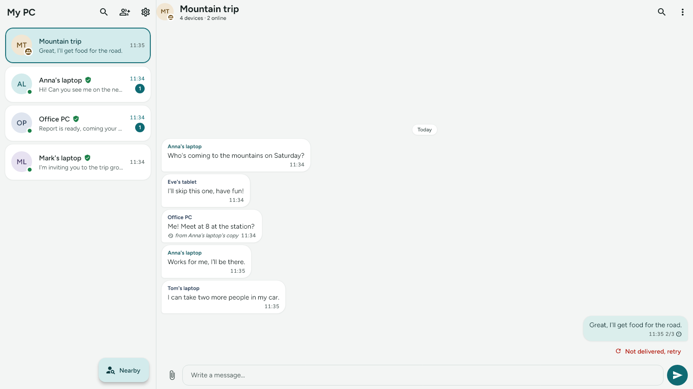

Messages and files travel straight from one device to the other, over your own Wi-Fi.
No server, no account, no cloud. Always encrypted.

Latest release: checking…
A shortcut in the Start menu, an entry in the system uninstall list and one place for updates. It installs for your own account, so it never asks for an administrator password.
Download installer
Unpack it anywhere and run chatt.exe. It writes nothing to
the system beyond its own data.
An APK to install from the phone. Android asks for permission to install from this source the first time.
Download APKThe installer is not signed with a certificate, so SmartScreen shows “Windows protected your PC”. Choose “More info”, then “Run anyway”. Later releases come through Settings, under Updates: “Check now” asks at once, and with the daily check turned on the app asks by itself. “Download and install” then fetches the new release and starts the installer for you. The portable copy shows the release page, since a new one is unpacked by hand.
Conversations with history, file transfers the receiver agrees to, and encryption from the first message on.
One broadcast and the devices see each other. When a router isolates its clients, you add the other device by IP address.
One conversation between several devices, up to 32, and still no server. Each message goes from its author straight to every member.
The receiver sees the name, the size and the checksum first, and the bytes flow only after accepting. Interrupted transfers resume.
After a reinstall or on a new phone, the other device hands its copy of the conversation back, with the files or without.
The phone receives with the window closed and the screen off. On Windows the app sits in the tray and can start with the system.
Calm, Precise and Warm, each in a light and a dark theme. English and Polish.
Add-ons for what most people never need, each behind its own switch in Settings and off from the start: Bluetooth, Internet (experimental) and Keyboard from a PC.
The same set of screens on a phone and on a monitor.




Messages and files go straight from one device to the other. Chatt has no server, so nothing is kept anywhere along the way.
Every connection agrees on its own key. Recorded traffic stays unreadable even after a device is stolen, and the history on disk is encrypted too.
A QR code or a six-digit code to compare on both screens. Once confirmed, you know whose key is on the other side.
No telemetry, no ads, nothing collected. Three things can reach outside your network, and each stays off until you turn it on: the check for a newer release, previews for links, and the Internet add-on.